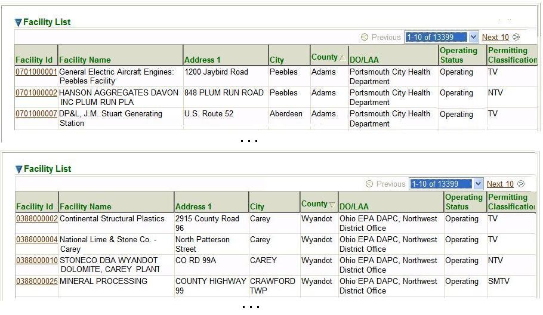
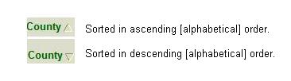
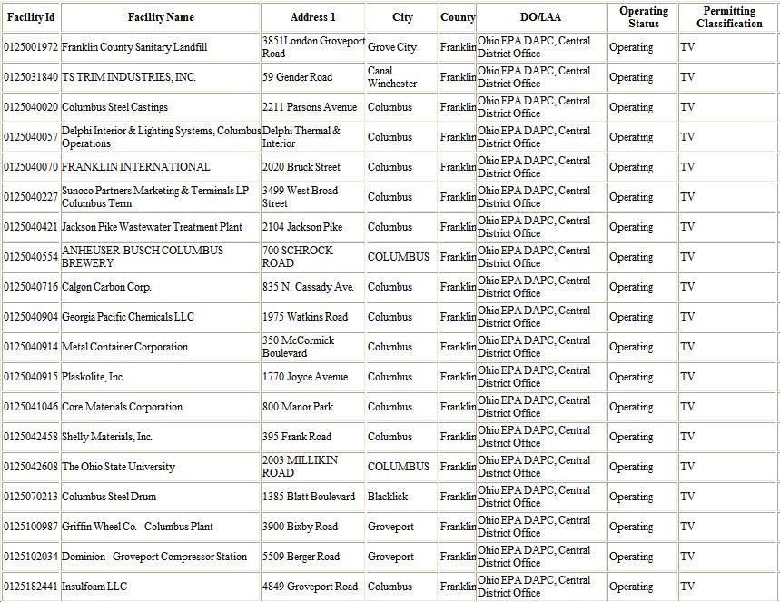
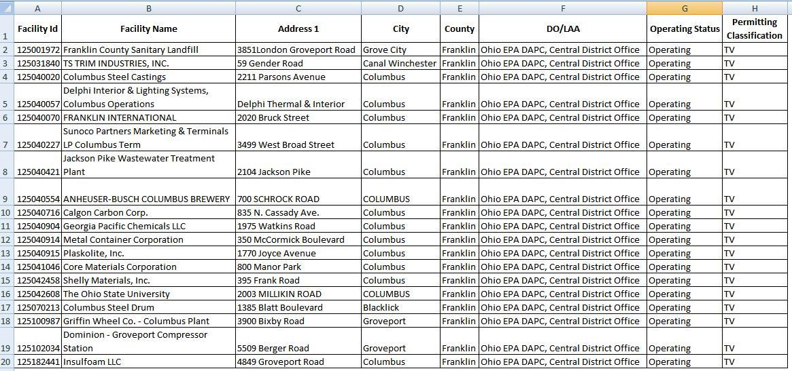

Previous Topic
Next Topic
| Common User Interface Elements |
Previous Topic |
Next Topic |
Datagrids are simply tables of data. The system presents such
tables whenever you request information that is best presented as a
list of common objects; that is,
where a data table most clearly represents the data.
A datagrid looks like this:

Datagrid Example: Facilities
The data in a datagrid is a series of rows, or records, each presenting summary data for one of whatever objects the data represents, for example control equipment (as shown above), permit applications, emissions inventories, etc. The objects shown, in this case control equipment, are those associated with your facility.
Each row provides information for one such object or entity, each column providing one data item about the object. Usually, the data in at least one field or column in the datagrid appears as a selectable link or hyperlink. Often (but not always) this is first column or the field that uniquely identifies each object (called the 'key' field); sometimes it is a numeric identifier such as Permit ID. In the case illustrated above, it is the Company ID for the equipment (a string). Clicking on any of these links takes you to a detail data page for the specific object described in that row. The detail data page contains different information depending upon the object or entity the data describes.
Regardless of what data is in the table, ALL datagrids in the system provide the following capabilities:
which are described in more detail below.
Datagrids have a default sort order. Often, but not always, the data will be sorted by default in ascending numerical order on the value of the key field. However, you can easily change the sort order by clicking on the column header for the data you wish to sort on. The datagrids below show the data sorted first in ascending alphabetical order on the ''Manufacturer'' value, and then in descending alphabetical order on the same value.

Ascending and Descending Sort OrderThe order of the
sort is indicated in the column header of the column on which you sort
the data.
For example:

When the column on which you sort contains numbers, rather than alpha-numeric character strings, then the sort will be in ascending or descending numerical order.
Every datagrid offers a  button below the visible rows in the grid.
When you
click on this button, the system opens a new browser window and
shows you a
printable table containing all the data in the datagrid (not just the rows
that you currently
see). The illustration below shows an example of such a table, based on the
data presented in the
Overview section:
button below the visible rows in the grid.
When you
click on this button, the system opens a new browser window and
shows you a
printable table containing all the data in the datagrid (not just the rows
that you currently
see). The illustration below shows an example of such a table, based on the
data presented in the
Overview section:

Table Produced by the Datagrid's Button
You may then use your browser print capability to print the table. Depending on your browser, you may also be able to change the orientation of the data table, change the margins on the page, control the header and footer (e.g., print a title, page number(s), date, etc.) and change the overall size of the table (which impacts column width), using File --> Print Preview --> Page Setup.
Every datagrid offers an button below the visible rows in the grid. When you select this button operation, the system gives you an option of opening the Excel file it generates, or saving it. In either case, you will see an Excel file like the one illustrated below

Table Produced by the Datagrid's Button
After you have generated and/or saved this file, you can use any of the capabilities of Excel to manipulate and format the data. You may also, of course, print the file in Excel's normal manner (File --> Print)